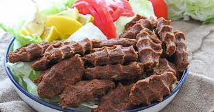

Çiğ Köfte nasıl yapılır.

lazım olan malzemeler
- 1 kg Esmer köftelik bulgur eğer yoksa normal ince bulgur da olabilir.(7.5 su bardağı
- 3.5 yemek kaşığı domates salçası.
- 3.5 yemek kaşığı biber salçası.
- Yarım çay bardağı pul biber
- 1 çay bardağı toz kırmızı bardağı.
- 5 adaet rendelenmiş sarımsak.
- 1 su bardağı sıvı yağ ve zeytin yağı karışık.
- yarım çay bardağından biraz fazla nar ekşisi.
- Yarım çay bardağından biraz fazla sumak
- 4 adet kuru soğan eğer büyükse 2 adet ( rendelenecek suyu sıkılacak )
- 1 yemek kaşığı Tuz ( İsteğe göre ayarlayabilirsiniz)
- 1 yemek kaşığı Tuz ( İsteğe göre ayarlayabilirsiniz)
Yapılş Şekli
Çiğ köfteyi yoğururken soğuk su veya isteğe göre rendelenmiş 1 adet küçük domates
ve son olarak buz
Etsiz Çiğ Köfte nasıl yapılır
Köftelik bulgurun üzerine 2 su bardağı kayner su ilave edip 10 dakika kadar dinlendirin.
Bütün malzemeleri katıp iyice yoğurun eğer hamur yoğurma makineniz varsa onda yoğurun çok daha kolay oluyor :) eğer çiğ köfte harcınız çok katıysa biraz domates rendesi veya soğuk su ilave edip istediğiniz kıvama gelene kadar yoğurun :)
İsteğe göre Yarım demet maydanozu ( ben kullanmadım) küçük küçük doğrayıp iyice yoğurun ve sonra elinizde sıkarak şekil verin ve çiğ köfteniz hazır gönül rahatlığıyla yiyebilirsiniz
Kullandığım Su bardağı ölçüsü 200 ml
A-Z Hazırlayan : Safiye Aras :)
Afiyet olsun